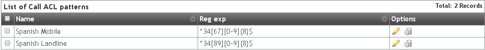
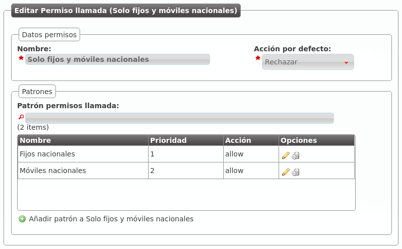

Control ACL para llamadas¶
Los Permisos de llamada determinan qué usuarios pueden llamar a qué destinos internos.
Atención
Las extensiones internas son accesibles por todos los usuarios, los permisos de llamada solo aplican a llamadas externas.
La configuración de permisos de llamada tiene 2 partes:
Clasificar las llamadas en determinados tipos utilizando expresiones regulares:
A nivel de marca: Configuración de Marca > Patrones de permiso genéricos.
A nivel de empresa: Configuración de Empresa > Patrones de permisos de llamada.
Definir políticas para los patrones deseados: Configuración de Empresa > Permisos llamada
Patrones de permiso¶
La clasificación de llamadas se realiza en las secciones indicadas a nivel de marca o a nivel de empresa.
Nota
Cuando un operador de marca crea una empresa, todos los Patrones permiso genéricos definidos en ese momento a nivel de Configuración de Marca se copian a Configuración de Empresa > Patrones de permisos de llamada. De esta forma, el operador de marca puede definir los más habituales y evitar este trabajo a los administradores de empresa.
La creación de nuevos patrones es muy simple:

Este nuevo patrón de permisos engloba las llamadas que comiencen el prefijo de país español seguido por 6 o 7 y sigan con 8 dígitos del 0 al 9. Es decir, engloba todas las numeraciones móviles nacionales.
Otros patrones de permisos que pueden resultar interesantes son:
- Fijos nacionales (incluyendo numeraciones especiales: 902, etc.): ^34[89][0-9]{8}$
34 (prefijo de país español), un 8 o un 9 seguido de 8 dígitos.
- Fijos nacionales (excluyendo numeraciones especiales: 902, etc.): ^34[89][1-9][0-9]{7}$
34 (prefijo de país español), un 8 o un 9, seguido de 1 dígito del 1 al 9, seguido de 7 dígitos.
- Fijo Reino Unido: ^44[0-9]+$
44 (prefijo del Reino Unido), seguido de más dígitos.
Formato de los números externos
Atención
Las expresiones regulares de los patrones de permiso tienen que estar en formato E.164
Existen dos razones principales para esta decisión:
El mismo patrón aplicará para todos los usuarios de la compañía, independientemente del país del usuario.
Los patrones a nivel de marca se heredarán en la creación de nuevas empresas. La única forma de que esto resulte útil es utilizar un formato estándar.
Además, con este formato es realmente fácil impedir (o permitir) llamadas a todo un país.
Permisos de llamada¶
La definición de un Permiso de llamada utiliza una lógica más fácil de describir con un ejemplo.
Imaginemos que tenemos los siguientes patrones de permisos:
Podríamos definir un Permiso de llamada como el que sigue:

Nota
La acción por defecto describe lo que hay que hacer con la llamada una vez que se han evaluado todas las reglas (permitir/rechazar).
Editamos el permiso de llamada que acabamos de crear para añadir las reglas necesarias:

- La métrica determina el orden de evaluación de las reglas y la acción lo que
se hará con la llamada en caso de matchear (permitir/rechazar).
Una vez hecho lo propio para el otro patrón de permisos, nuestro permiso de llamadas quedará como sigue:
Ya solo faltaría añadírselo a un usuario concreto en la sección Configuración de empresa > Usuarios:

Desde este momento, Alice solo podría llamar a extensiones internas (siempre están permitidas) y a móviles y fijos nacionales.